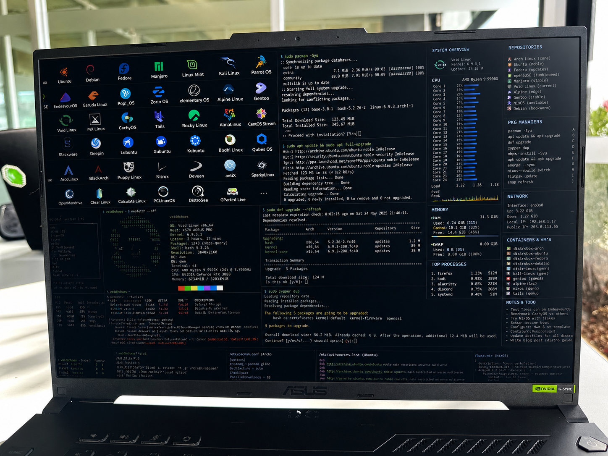
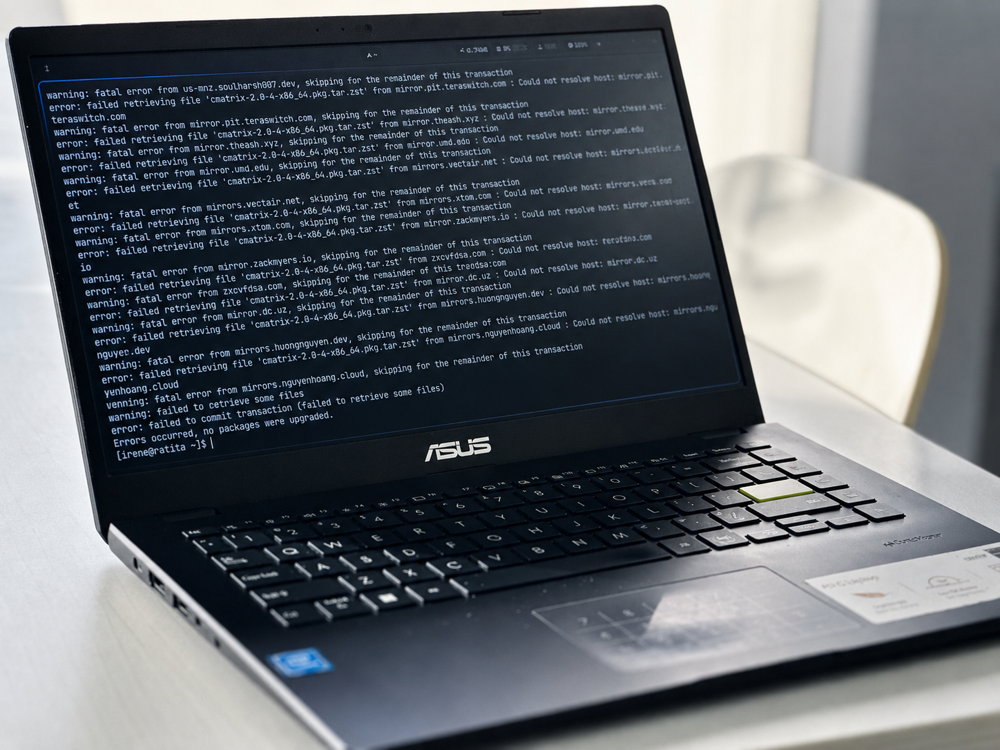
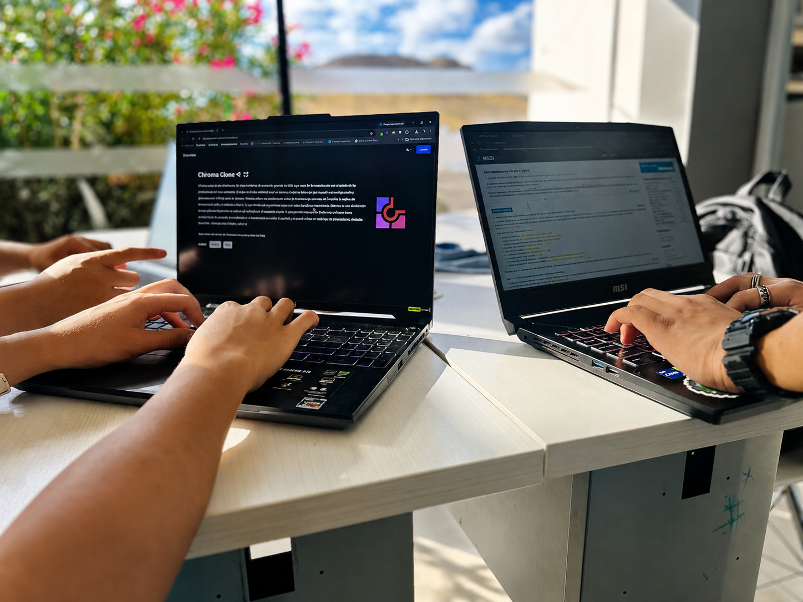

No sabes qué distro elegir.
Arch, Mint, Pop!_OS, NixOS, Bazzite. Cada foro recomienda algo distinto, y la elección define los siguientes 6 meses.
Toma tu perfil, tu hardware y tu forma de trabajar. Devuelve un script post-instalación, revisable, tuyo.

Empezando con Arch · CachyOS v0.1 — MVP en construcción
Arch, Mint, Pop!_OS, NixOS, Bazzite. Cada foro recomienda algo distinto, y la elección define los siguientes 6 meses.
Pegas curl | sudo bash de un tutorial de 2019 y rezas. Un día rompe algo y no sabes qué tocó.
Cambias de disco o de laptop y se va contigo nada. Dos tardes recordando qué tenías instalado y dónde.
Cuestionario corto que entiende uso, hardware, experiencia previa y tolerancia al riesgo.
Distro, kernel, entorno gráfico y stack de paquetes alineados a tu perfil, con justificación de cada elección.
Bash comentado e idempotente. Tú decides cuándo y cómo correrlo, Mi Linux nunca toca tu máquina.
De cuestionario a setup reproducible en menos de diez minutos. La ejecución sigue siendo decisión tuya, el script vive en tu USB, no en nuestros servidores.
Web. Sin cuenta obligatoria, sin instalación.
Guiado. Uso, hardware, experiencia, prioridades.
Tags legibles y score por categoría.
Distro, entorno, paquetes y dotfiles base.
Lo lees, lo modificas, lo corres cuando quieras.
Quiere su entorno listo en una tarde, no en un fin de semana.
Viene de Windows, no quiere perder Steam ni el anti-cheat de sus juegos.
Primera vez en Linux. Necesita algo estable que no le rompa los apuntes.
Reinstala seguido. Quiere su mismo entorno en cualquier máquina, sin notas sueltas.
mi-linux.app/ ├── setup │ └── preview └── — Perfil del usuario
# --- setup.sh ----------------------------------
# generated for: irene · arch · hyprland · gaming
# revisa este script antes de ejecutarlo.
set -euo pipefail
DISTRO="arch"
USER_PROFILE="dev-gaming"
# [01] mirrors + base system ----------------------------
sudo reflector --country MX,US --latest 10 \
--sort rate --save /etc/pacman.d/mirrorlist
sudo pacman -Syu --noconfirm
# [02] hyprland + wayland stack -------------------------
sudo pacman -S --needed --noconfirm \
hyprland waybar wofi swaylock swww \
xdg-desktop-portal-hyprland mako kitty
# [03] gaming ------------------------------------------
sudo pacman -S --needed --noconfirm \
steam gamemode mangohud lib32-vulkan-icd-loader
# [04] dev toolchain ------------------------------------
sudo pacman -S --needed --noconfirm \
git neovim fish starship fzf ripgrep
# done. reinicia para entrar a hyprland.Revisa siempre el script antes de ejecutarlo. Mi Linux no corre nada en tu sistema.
Mi Linux nunca ejecuta nada en tu máquina. El script vive en tu disco: auditable, editable, descartable.
Lees el script completo en el navegador. Sin sorpresas dentro del archivo.
No hay curl | bash. Decides tú cuándo correrlo y desde dónde.
No pedimos email para generar. No guardamos tu hardware. Sesión efímera por default.
Cada paquete viene de un bloque revisado en el repo público, no de scripts de terceros opacos.

Más control sobre tu sistema.
Crear mi setup Crear mi setup